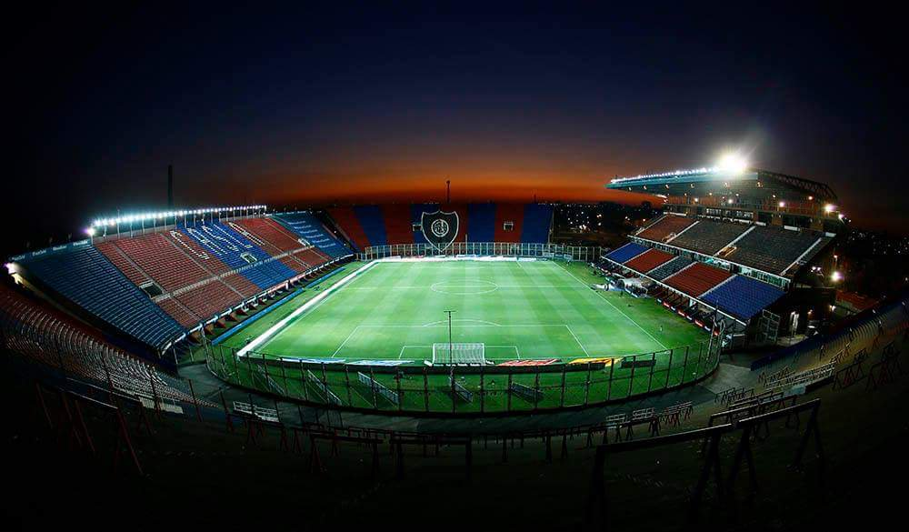

La llegada al barrio del padre salesiano Lorenzo Bartolomé Massa fue determinante a la hora de la fundación de San Lorenzo de Almagro, con su visión social para sacar a los pibes de los peligros de la calle, fue fundamental para que aquellos chicos del lugar creyeran en ese noble cura joven que les abría su corazón y las puertas del Oratorio San Antonio para que mostrarán su fútbol. Luego de varios años, se realizó la primera asamblea extraordinaria, el 1 de abril de 1908, fecha establecida como el día de su fundación. En ese momento se decidió elegir el nombre del flamante club. El primero que surgió fue el de "Los forzosos de Almagro", pero ante la valoración negativa hecha por el padre Lorenzo Massa, se escogió el nombre de San Lorenzo, en su homenaje, a lo que él -por principios- se negó, para finalmente aceptar que se lo nombre así en honor al santo y a la Batalla de San Lorenzo; por pedido de Federico Monti, uno de los fundadores, se le agregó la partícula "de Almagro", barriada porteña —todavía no se podía hablar de "barrios"— con la que se identificaba la mayoría de los miembros, que vivían entre los actuales límites de Caballito y Almagro.
En 1914, San Lorenzo se afilió a la Asociación Argentina de Football, y presentó equipo en dos divisiones: Segunda (en ese momento la tercera categoría del fútbol argentino, detrás de la Primera y la Intermedia) y Tercera (el cuarto nivel de competencia por entonces), esta última disputada exclusivamente por juveniles. Se tuvo que realizar una inversión y fue gracias al aporte de 120 pesos de Federico Monti, uno de los fundadores y futbolista del club, que eso se pudo lograr.
Comenzó a disputar el 26 de abril de 1914 el torneo de Segunda División. Terminó en el primer puesto de su sección en noviembre de ese año, pero con la misma cantidad de puntos que Unión Excursionistas, lo que lo obligó a jugar un desempate, que terminó ganando 5:0 en el segundo partido disputado, luego de igualar 1:1 el primer juego. Como ganador de sección jugó, y ganó por 1:0, la semifinal del certamen ante Sportivo Buenos Aires, y luego la final a Germinal por 5:2, con lo que se consagró campeón. Al incorporarse la Federación Argentina de Football a la Asociación Argentina a fines de 1914, se reunificó la Primera División para el campeonato de 1915, y se produjo el ascenso de un club de cada entidad para la temporada siguiente. La AAF determinó que los dos ganadores de las categorías de ascenso jugaran una final para acceder a la máxima categoría; San Lorenzo, como campeón de Segunda División (la tercera categoría), le ganó la final por el ascenso a Honor y Patria de Bernal, campeón de División Intermedia (segunda categoría). El partido se disputó el viernes 1 de enero de 1915, y terminó con un contundente 3:0, con lo que San Lorenzo pasó a jugar directamente en Primera sin haber pasado por la segunda categoría..

El Viejo Gasometro
Estadio Viejo Gasometro, Primer estadio del club hasta el 81 donde los militares forzaron al club a dejar esas tierras. El estadio seria demolido en el 15 de agosto del mismo año.

El Nuevo Gasometro
Estadio creado por San Lorenzo luego de ser despojado de Avenida La Plata, y desde el cual es local luego de alquilar canchas para hacer de local, Hasta el año 1995. Año en el que se inaguraria este mismo.
El 7 de mayo de 1916, en un partido oficial frente a Estudiantes de La Plata, fue inaugurado "El Gasómetro", primer estadio del club, situado en el barrio de Boedo sobre la Av. La Plata, entre las calles Inclán y Las Casas. Fue victoria para San Lorenzo, por dos tantos contra uno. San Lorenzo comienza a hacerse fuerte a partir de consolidarse como institución en la segunda década del siglo XX. En el mes de febrero del año 1919 el club interviene en el denominado "Torneo Caballito" junto a los clubes Atlanta, Huracán, Ferro, Estudiantil Porteño y Sportivo Almagro, consagrándose campeón de dicho certamen.
El club de Boedo por ese entonces conquista tres títulos de primera división en los años 1923, 1924, 1927 y dos subcampeonatos en 1925 y 1926. También comienza a conseguir prestigio internacional al ganar la Copa Campeonato del Río de la Plata en 1923 y la Copa Aldao en 1927 competiciones que enfrentaban a los equipos campeones de Primera División de Argentina y Uruguay.
San Lorenzo en el profesionalismo, empezaria con fuerza siendo subcampeon 2 veces y en el tercer torneo jugado en el profesionalismo. El Ciclon, conseguiria su primer titulo en el año 1933